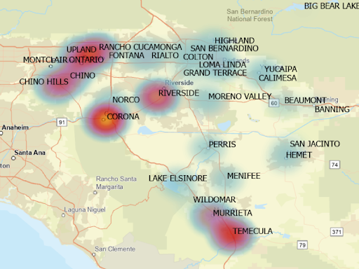

College Degree Returns Visualization

Time span: February 2021 - May 2021
Description:
- Made a program in R to render an animated bar chart that demonstrated how much return students get from different levels of education (Associate’s Degree, Bachelor’s Degree, etc.)
- Used data from CollegeBoard on average expenses/debt, time to earn degree, and salary after graduation to estimate average return over many years
Voice-Controlled Car
Time span: September 2021 - December 2021
Description:
- Worked with a team to create a robot that is operated through an Arduino UNO board
- Using an ESP2866 wifi module, the Arduino was able to communicate with an Amazon Echo device.
- Programmed robot functions that were activated through voice commands via an Amazon Echo device
Autonomous Sensing Robot

Time span: January 2022 - April 2022
Description:
- This robot served on a team of 3 robots with the goal of scoring the correct amount points. The amount of points needed was discerned by a set of sensor cubes that either had a certain depth or light level inside of them.
- This robot was responsible for getting the sensor readings needed to discern point values. It uses a LEGO EV3 brick, an ultrasonic sensor, and a light sensor.
GIS App

Time span: September 2022 - Current
Description:
- Working as a team to integrate a smart map through ESRI ArcGIS into an app that will connect patent holders, startups, and investors to boost the technology sector in the Inland Empire
- Using machine learning to organize and make connections within data used in the smart map visualization